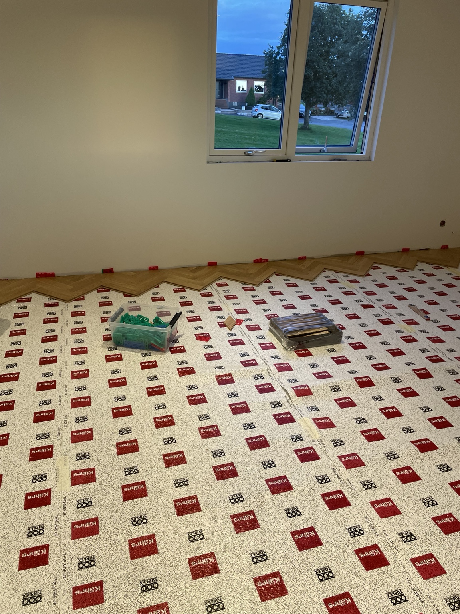

01
Plattor och markarbete
Vi hjälper till med stensättning, gångar, uteplatser och murar. Beskriv platsen så ser vi vilket underlag som behövs.

Målagården
Praktisk hjälp inne och ute. Plattor, golv och underhåll för privatpersoner, företag och bostadsrättsföreningar.
Fråga om ditt projektVi hjälper till med stensättning, gångar, uteplatser och murar. Beskriv platsen så ser vi vilket underlag som behövs.
Golvläggning kan kombineras med gipsning, spackling och målning. Berätta vilka rum och ytor det gäller.

Löpande skötsel, underhåll och praktisk hjälp för fastigheten och utemiljön.

1 Vad behöver göras?
2 Var finns fastigheten?
3 Skicka gärna bilder.